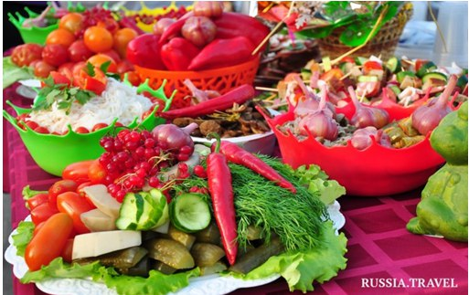

Гастрономический фестиваль,
Астраханская область
Первый международный форум-фестиваль «Гастрономические дороги Великого Шёлкового пути. Путешествие за вкусом, Астрахань 2017» прошел в Астраханской области с 7 по 9 июля при поддержке Федерального агентства по туризму и Всемирной туристской организации (ЮНВТО).
Это яркое мероприятие стало площадкой для диалога представителей органов власти и турбизнеса из регионов России и зарубежных государств, а также профессиональных объединений, рестораторов, отельеров, шеф-поваров, производителей продуктов питания и напитков, деятелей науки и искусства по вопросам развития гастрономического туризма и популяризации гастрономических туров на трансграничном туристическом маршруте «Шелковый путь».
Это яркое мероприятие стало площадкой для диалога представителей органов власти и турбизнеса из регионов России и зарубежных государств, а также профессиональных объединений, рестораторов, отельеров, шеф-поваров, производителей продуктов питания и напитков, деятелей науки и искусства по вопросам развития гастрономического туризма и популяризации гастрономических туров на трансграничном туристическом маршруте «Шелковый путь».
